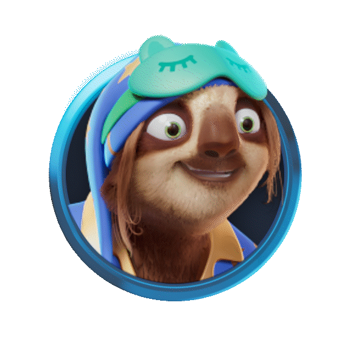
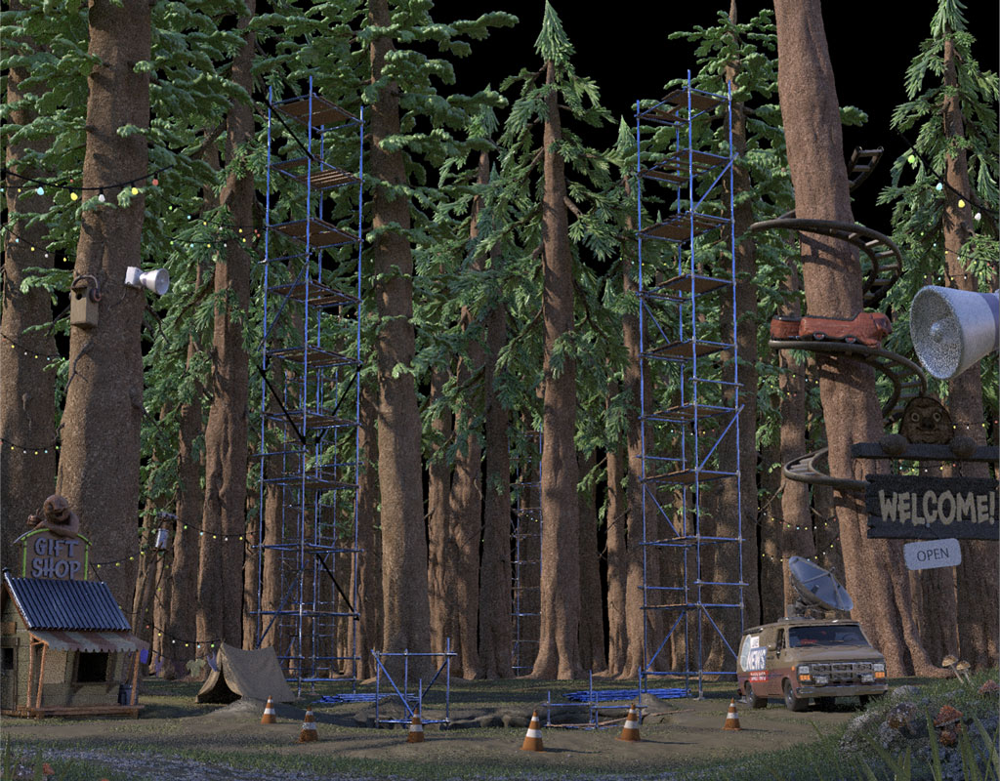
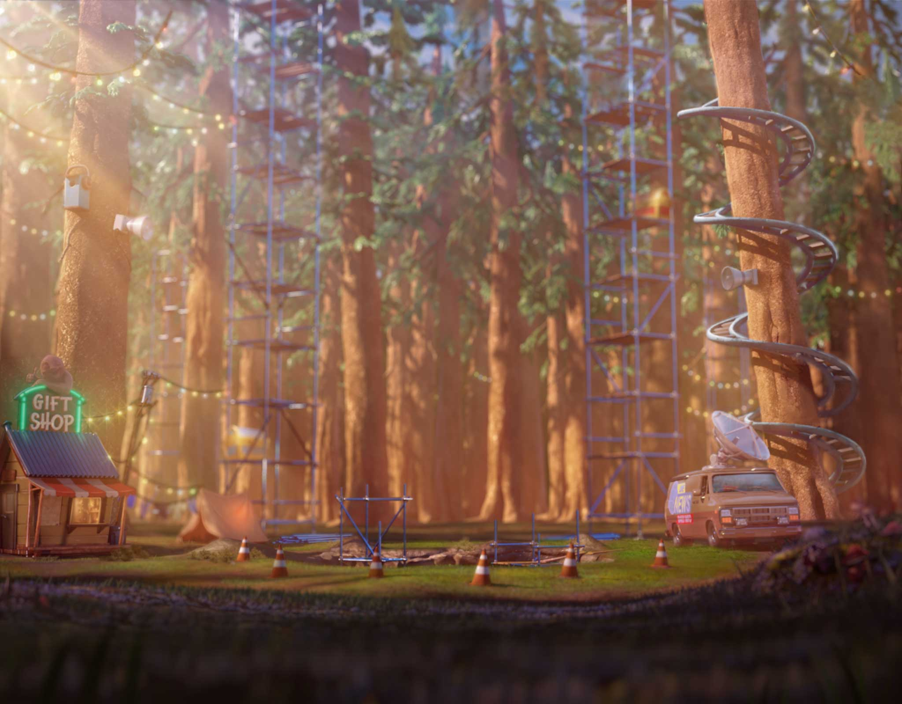

Epic Dreams
As a key member of the team behind Epic Dreams, I played a pivotal role in shaping multiple aspects of the production process, contributing to the game's development and overall vision.
Ui character
In Epic Dreams, the sloth is always visible next to the reel area. We put a lot of effort into making it feel alive while keeping the file size as small as possible. Below, you can see some of the animation states from the final game.Idel
Anticipation

Large Win

Symbol FX
In Epic Dreams, nearly every symbol shares a unified set of dynamic effects. I designed a custom start, loop, and end state system, which we trigger directly through code, breaking from our usual approach of using Spine. This innovative method brought a fresh level of control and fluidity to the game’s animation.Win Effects preview
Background
We did the background in 3D for this game with alot of post FX and paint. I did alot of the modelling setdressing and layout. I also did the lightning shading and compositing. Me and my collegues all worked on this background.
Wip background
Final background
Character look development and grooming
Once my colleague got the green light on the character model, it was all on me to push it to the finish line. I dove into lookdev, refining the model for animation by tackling retopology, tweaking UVs, and perfecting the textures. With the model locked in, I moved on to the fur, grooming, and shading—before wrapping it all up with lighting, rendering, and compositing.